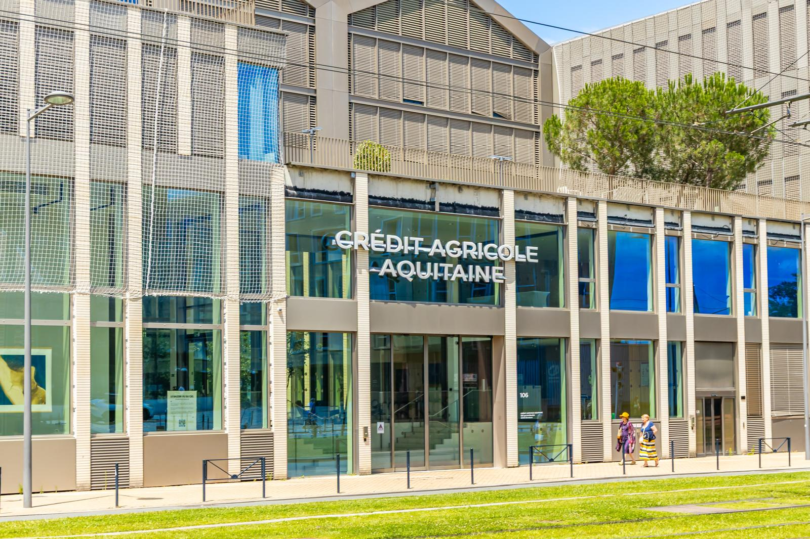
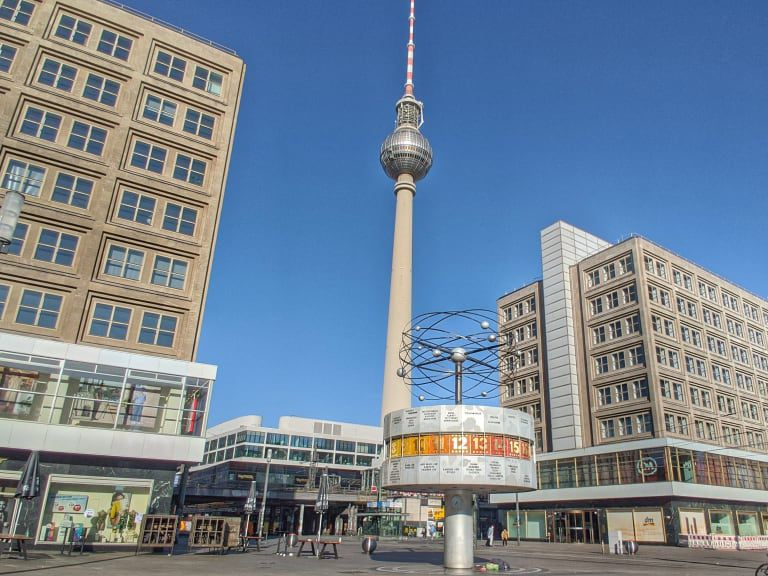
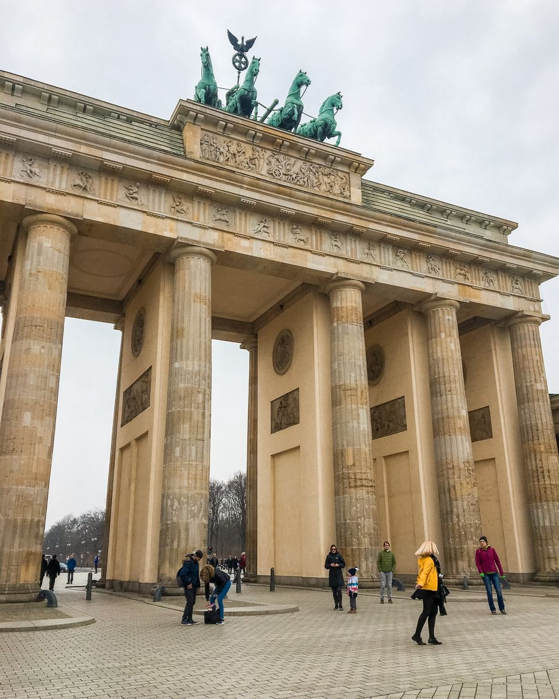
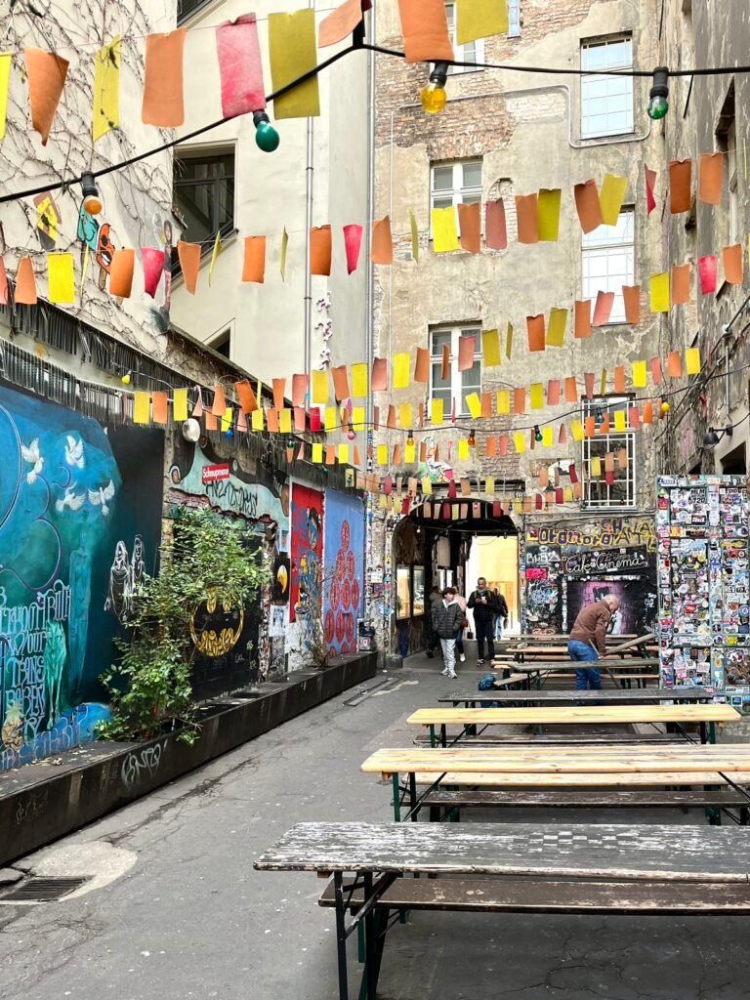

Solaris — la banque européenne nativement construite sur l'IA
Fiche technique
Scène 1 · Intro
Plan d'ouverture avec les 2 avatars

Guten Tag, aujourd'hui direction l'Allemagne à la rencontre de Solaris qui annonce vouloir devenir la 1ère banque européenne nativement construite sur l'intelligence artificielle. Rien que cela !
Scène 2 · Corps
Femme seule à l'écran · Berlin



Solaris est une société technologique disposant d'une licence bancaire allemande, spécialisée dans le Banking-as-a-Service. La fintech ambitionne de transformer son infrastructure de finance intégrée en une plateforme bancaire paneuropéenne automatisée à large échelle.
Concrètement, Solaris délègue la gestion des opérations à des agents IA. Seuls le contrôle, la conformité et la gouvernance restent sous supervision humaine.
L'objectif : faire tourner une banque en continu, avec moins de frictions et une capacité d'exécution démultipliée. À la clé, un développement produit plus rapide, une scalabilité accrue et des intégrations simplifiées.
Scène 3 · Outro
Retour sur le plan d'ouverture avec les 2 avatars
Tu vois, Solaris souhaite ainsi offrir aux entreprises non financières une banque modulable, rapide à déployer, et des parcours enrichis où des agents IA pilotent les opérations critiques : onboarding, scoring, monitoring, gestion opérationnelle.
Un petit bretzel pour digérer ? 🥨